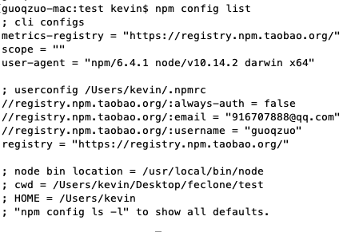

2019/12/04
Author: guoqzuo
npm设置下载源
在设置npm下载源之前，我们先来看看怎么查看当前npm的下载源
npm config list # 查看当前npm配置项，包括源(registry)信息
修改源
# 设置源
npm config set registry http://registry.npm.taobao.org
# 查看帮助文档
kevindeMacBook-Air:svnclone kevin$ npm config -h
npm config set <key> <value>
npm config get [<key>]
npm config delete <key>
npm config list [--json]
npm config edit
npm set <key> <value>
npm get [<key>]
alias: c
# 根据上面的命令，查看源
guoqzuo-mac:test kevin$ npm config get registry
https://registry.npm.taobao.org/